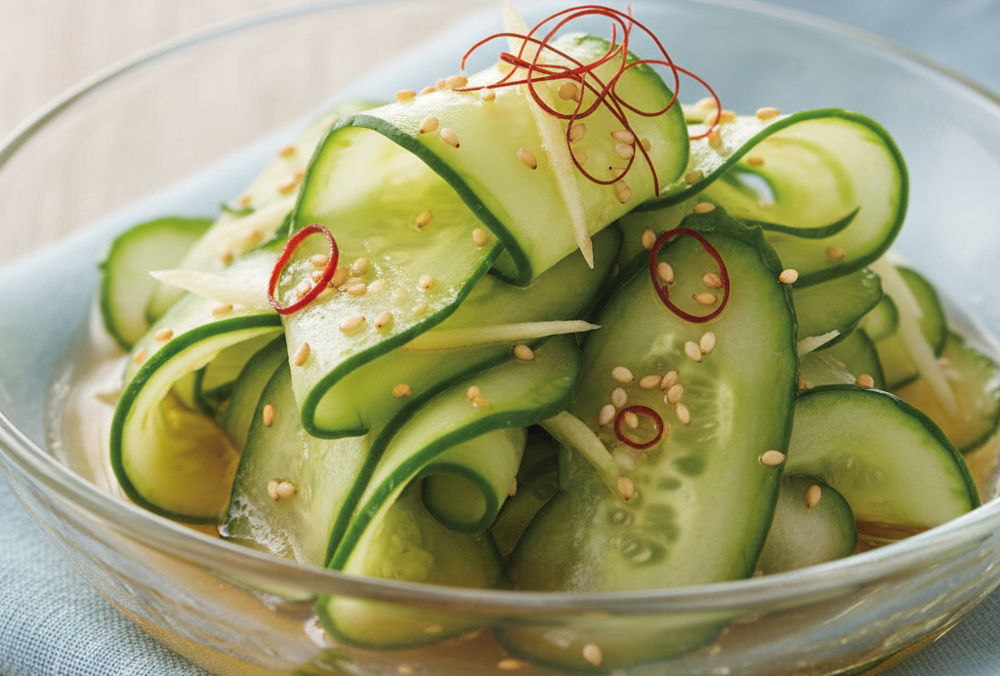
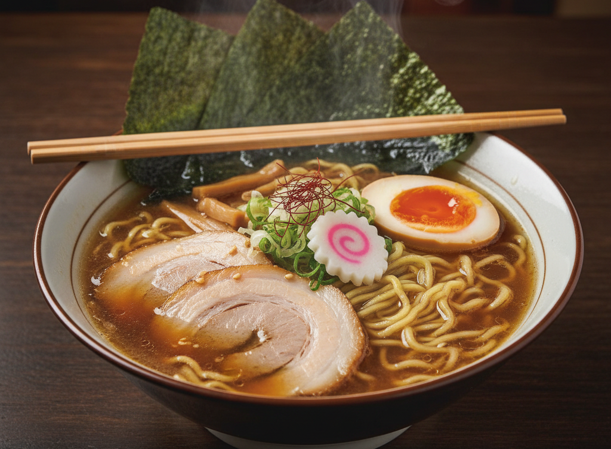
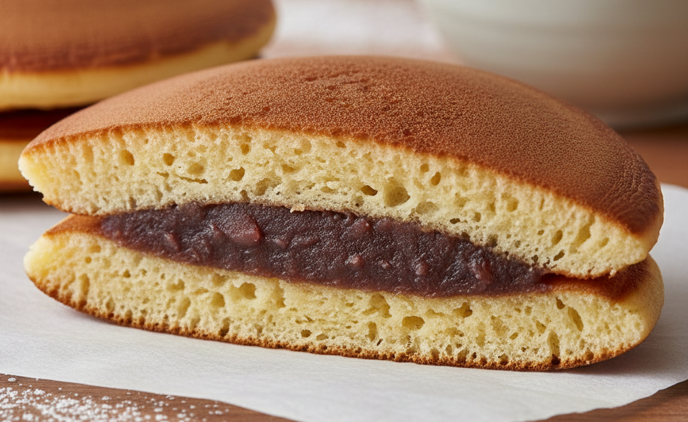

Vorspeise
Wir starten mit einem leichten Gurkensalat mit Essig-Dressing. Der Kyüri no Sunomono. Ein echter Gaumenschmaus
Zum Rezept
Hauptspeise
Ein traditionelles japanesisches Nudelgericht, sind die so genannten Tokyo Shoyu Ramen. Diese dürfen bei keinem echten japanischen Essen fehlen.
Zum Rezept
Nachtisch
Entdecke Dorayaki: fluffiger Teig gefüllt mit traditioneller Anko. Tauche in die japanische Patisserie ein und zaubere den Lieblingssnack von Doraemon selbst.
Zum Rezept